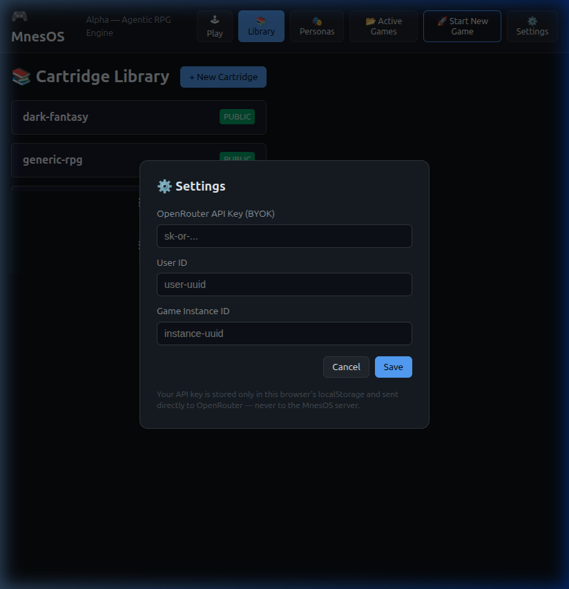
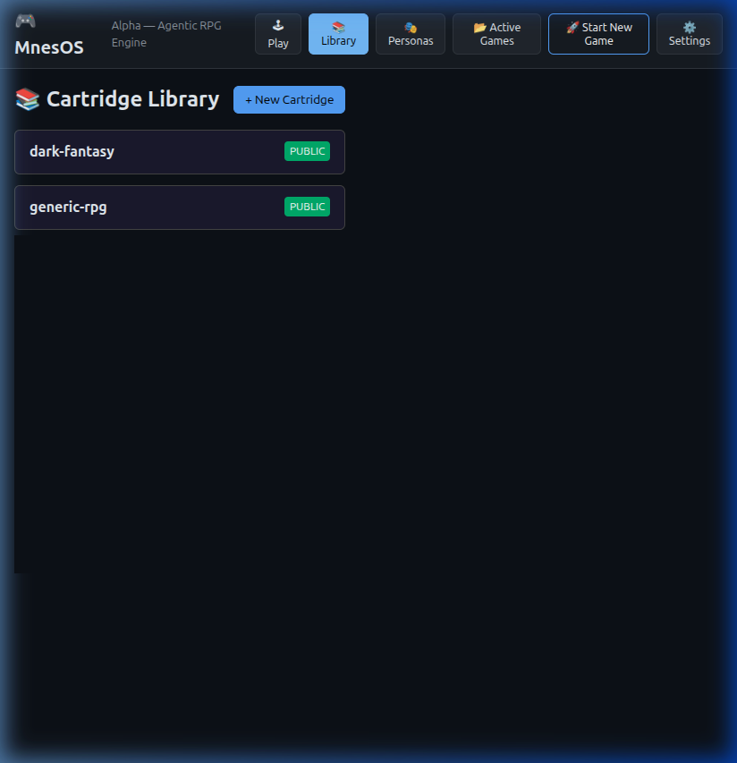
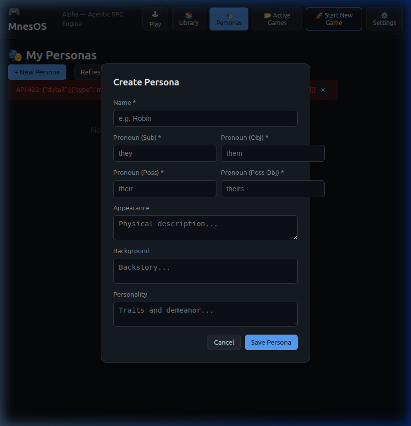
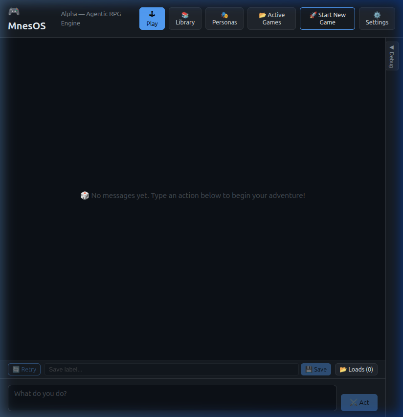
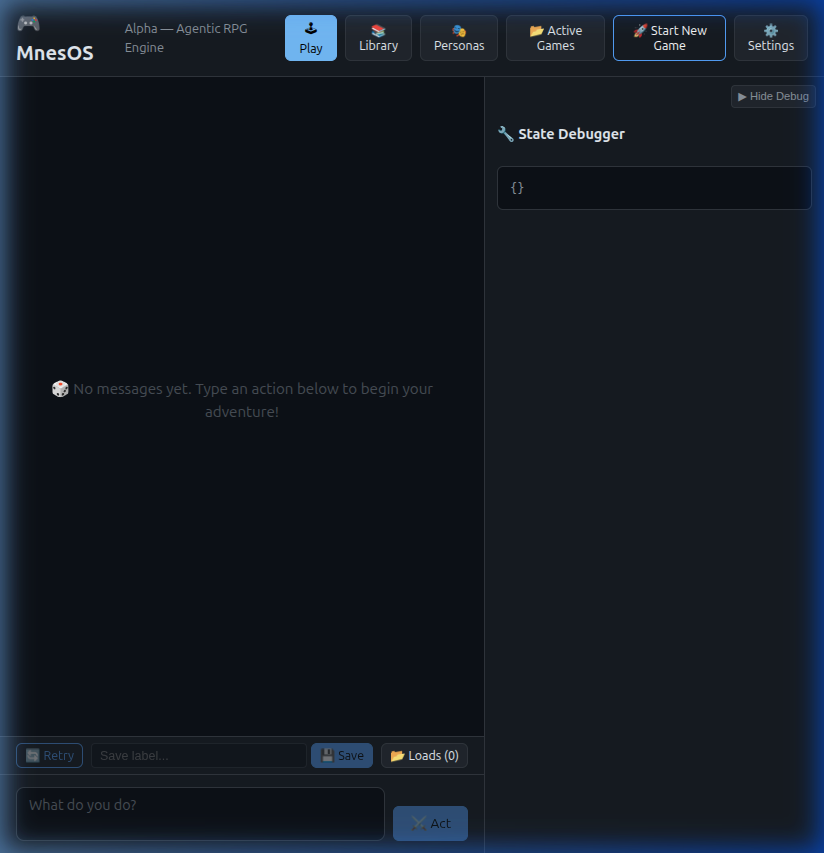

Play-Testing MnesOS on Windows — Step-by-Step Guide¶
This guide walks you through setting up and running a local play-test of the MnesOS agentic RPG engine on Windows from scratch. It is written for people who are comfortable using a terminal (PowerShell or Command Prompt), but who are not software engineers.
What You Will Be Running¶
MnesOS has two parts that must run at the same time:
| Part | What it is | Where you run it |
|---|---|---|
| Backend (API server) | Python application that runs the game engine | Terminal 1 |
| Web UI (front-end) | Browser app you use to actually play | Terminal 2 |
You will need two terminal windows (PowerShell is recommended) open side by side.
Prerequisites¶
1. Install Python 3.12+¶
MnesOS requires Python 3.12 or newer.
Check your current version first: Open PowerShell and type:
If the output says Python 3.12.x or higher, you are good — skip to step 2.
If you need to install Python:
1. Download the installer from Python.org.
2. IMPORTANT: During installation, make sure to check the box that says "Add Python to PATH".
3. Once installed, close and reopen your terminal and run python --version again to verify.
2. Install Node.js via nvm-windows¶
The web UI requires Node.js. We recommend using nvm-windows (Node Version Manager) to manage your Node versions.
- Download the latest
nvm-setup.exefrom the nvm-windows releases page. - Run the installer and follow the prompts.
- Open a new PowerShell window and verify it's installed:
Install and use the latest LTS version of Node.js:
Verify Node and npm are available:
Quick Reference¶
First-time setup only¶
# In the MnesOS project root:
python -m venv venv
.\venv\Scripts\activate
pip install -e ".[dev,api]"
mnesos-ingest-cartridges
# In web-client\ (one-time install):
npm install
Starting up (every session)¶
# Terminal 1 — Backend API server
cd C:\path\to\MnesOS
.\venv\Scripts\activate
uvicorn MnesOS.api.app:app --reload
# Terminal 2 — Web UI
cd C:\path\to\MnesOS\web-client
npm run dev
Then open http://localhost:5173 in your browser.
Part 1 — Setting Up the Backend (Python / API Server)¶
Open Terminal 1 (PowerShell) and navigate to the MnesOS project root:
Tip: Replace
C:\path\to\MnesOSwith the actual folder path where you downloaded MnesOS.
Step 1.1 — Create a Virtual Environment¶
This creates a venv folder in your project directory to keep dependencies organized.
Step 1.2 — Activate the Virtual Environment¶
On Windows, the activation command is slightly different than on Linux/macOS:
Your terminal prompt should now show (venv) at the beginning.
Note: If you get an error about "scripts cannot be executed on this system", you may need to run this command once (as Administrator) to allow local scripts:
Set-ExecutionPolicy -ExecutionPolicy RemoteSigned -Scope CurrentUser.
Step 1.3 — Install Python Dependencies¶
Step 1.4 — Ingest Game Cartridges¶
Step 1.5 — Start the API Server¶
Leave this terminal running. The API server is now at http://localhost:8000.
Part 2 — Setting Up the Web UI (Front-End)¶
Open Terminal 2 (PowerShell) and navigate to the web client directory:
Step 2.1 — Install JavaScript Dependencies¶
Step 2.2 — Start the Web UI Dev Server¶
The UI is now running at http://localhost:5173. Open this in your browser.
Part 3 — Using the Web UI¶
The interface on Windows is identical to the Linux/macOS versions.
Step 3.1 — Configure Settings First¶
Click ⚙️ Settings in the header.

| Field | What to enter |
|---|---|
| OpenRouter API Key (BYOK) | Your sk-or-... key |
| User ID | Any string (e.g. windows-user) |
Click Save.
Step 3.2 — Browse the Library¶
Click 📚 Library.

Step 3.3 — Create a Persona¶
Click 🎭 Personas, then + New Persona.

Step 3.4 — Start a New Game¶
Click 🚀 Start New Game, select your cartridge, version, and persona, then click Start Game.
Step 3.5 — Playing the Game¶
Interact with the narrator in the 🕹 Play view.

Expand the State Debugger on the right to see live game data:

Part 4 — Stopping the Servers¶
Press Ctrl+C in both terminal windows to stop the servers.
To deactivate the Python virtual environment:
Troubleshooting (Windows Specific)¶
Script Execution Error¶
If you cannot activate the venv, run this in PowerShell:
Set-ExecutionPolicy -ExecutionPolicy RemoteSigned -Scope CurrentUser
Python Not Found¶
Ensure you checked "Add Python to PATH" during installation. If not, reinstall Python or manually add it to your System Environment Variables.
nvm or node Not Recognized¶
Ensure you restarted your terminal after installing nvm-windows.